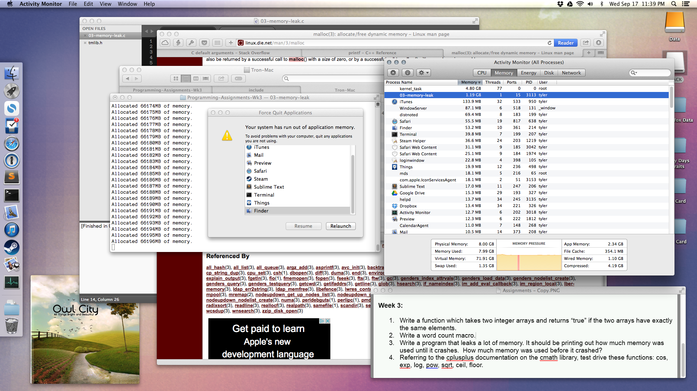

---

layout: default
title: 03-memory-leak

---

{% highlight c++ %}
// Tyler Mumford, 2014
// Leak memory until a crash occurs.

#include <stdio.h>
#include <stdlib.h>

int main () {
	int i = 1, j;
	const int step = 1024*1000;
	char *pointer;

	while (1) {
		pointer = malloc(step);
		for (j = 0; j < step; j++) pointer[j] = 0;
		printf("Allocated %iMB of memory.\n", i++);
	}
}

{% endhighlight %}


